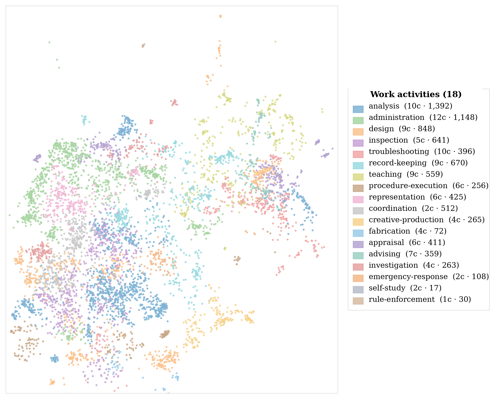
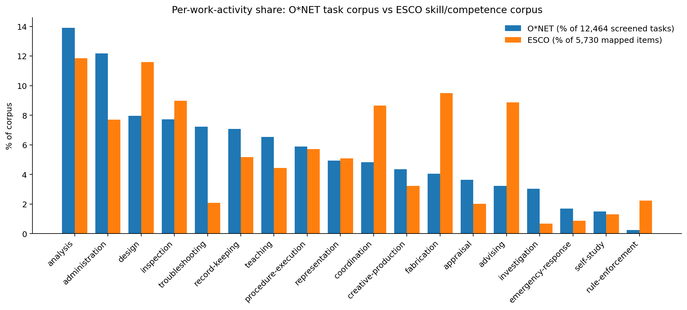

01
Represented activity
The recurrent unit of work the benchmark is meant to represent. One episode may combine several activities.
Names the target construct between a component capability and an occupation or domain.A work-facing benchmark makes four choices explicit: the activity represented, the setting tested, the work product required, and the result actually evaluated.
This page supports the represented-activity field with an aim-dependent inventory of 18 cross-occupation work activities derived from O*NET task statements. It is a reporting vocabulary for benchmark design, not a labor-market weighting, deployment estimate, or claim that one activity vocabulary fits every evaluation aim.
The four fields separate choices often bundled into a task label or score. They can be used prospectively to design a benchmark or retrospectively to state what an existing benchmark actually tests.
The recurrent unit of work the benchmark is meant to represent. One episode may combine several activities.
Names the target construct between a component capability and an occupation or domain.The materials, tools, role, authority, and workflow state under which the activity is evaluated.
Fixes the conditions under which the result provides evidence.The artifact or persistent state the activity should leave for review, filing, execution, or continuation.
Makes the receiving workflow and expected handoff object explicit.The part of the submitted output, artifact, or resulting state that the metric, tests, or rubric actually check.
Defines the boundary of the evidence collected by the benchmark.The activity field uses a middle-level vocabulary. Component behaviors such as retrieval or summarization can appear inside several activities, while occupations and domains contain many activities with different products and review conditions.
| Work activity | Tasks | Definition | Input | Expected output |
|---|
Counts are final assignments in the 12,464-task reporting corpus. The stricter 8,372-task atlas subset is used for clustering and visualization, so atlas and reporting counts differ by activity.
The atlas visualizes profession-neutral rewrites of the stricter O*NET subset after embedding and projection. It is a qualitative inspection aid, not a quantitative measure of labor-market importance or pairwise work similarity.

Nearby points often share task language and occupational context. Disconnected regions with the same label show that one activity can occur in different occupational contexts. The methodological text on this page follows the current manuscript.
Open interactive task map ↗Five checks evaluate the frozen 18-activity vocabulary. They support its use for reporting; they do not establish a unique partition of knowledge work or item-level classification accuracy.
O*NET remains the derivation source. The frozen labels are applied to ESCO v1.1.1 skills and competences linked as essential to ISCO-08 groups 1–3 occupations.

Both corpora populate all 18 activities, but the source units re-weight the distribution. ESCO gives larger shares to advising, fabrication, and coordination; O*NET gives larger shares to troubleshooting, administration, and record-keeping. These are corpus differences, not prevalence estimates.
Three released cases illustrate expert-graded occupational deliverables, answer-scored grounded document analysis, and executable software-state changes. These are case-level demonstrations, not benchmark-wide coverage analyses.
| Field | GDPval | OfficeQA Pro | APEX-SWE |
|---|---|---|---|
| Represented activity | Inspection + design. | Record-keeping + analysis. | Procedure-execution + record-keeping; troubleshooting enters if execution fails. |
| Tested setting | Federal grants-management role, fixed reference materials, task context, and required artifact. | Fixed Treasury Bulletin corpus, supplied CPI-U value, and closed numerical question. | Local users.csv, credentials, service documentation, LocalStack state, executable tests, and rubric. |
| Required work product | Federal Applicant Risk Assessment Tool for the specified grant-review task. | Numerical answer to the specified question. | Working Python script plus the required S3 object and state change. |
| Evaluated result | Submitted compliance artifact under head-to-head expert comparison. | Final number under exact-match or numerical-tolerance scoring. | Execution, S3 path, schema, and nonempty output; row-level correspondence with the source file is not checked. |
Evaluation ends at deliverable quality. Grant-workflow linkage, approval records, filing actions, revision history, and audit trail sit outside the released case.
Evaluation ends at the final value. A reviewable analyst product would also retain source/version, extracted values, units, intermediate calculations, and assumptions.
Tests establish local ticket completion and endpoint state. Row-level source-to-state fidelity remains only partially checked.
The reporting corpus and atlas subset serve different purposes. Final labels are propagated to the full screened corpus for reporting; the visualization uses a stricter subset for clustering and inspection.
Profession-neutral task phrases are embedded with text-embedding-3-small into 1,536 dimensions and L2-normalized. UMAP uses 15 dimensions, 30 neighbors, cosine distance, minimum distance 0, and seed 42. HDBSCAN uses minimum cluster size 30, minimum samples 10, and excess-of-mass extraction. The geometry yields 108 clusters; 4,487 noise points are soft-assigned for downstream review through membership vectors.
Four rounds of Claude Opus 4.7 summarization propose domain-stripped labels, with human review determining the retained set. Rounds 1–3 yield 38, 39, and 16 top-level activities. Round 4 yields 19 candidates; a 93-task clinical, surgical, and nursing-support cluster is folded into procedure-execution, producing the final 18. Those labels are then applied to all 12,464 reporting statements.
A benchmark episode can map to several activities. Reports should distinguish activities required for the intended work product from incidental actions induced by the environment, then state which parts of the product remain outside evaluation.
Activity-level reporting across domains and occupations; comparison of benchmark cases with different task formats; explicit connection from a work claim to tested conditions, expected work product, and evaluated result.
Labor-market weights, automation potential, occupational replacement, deployment frequency, a unique ontology of work, or correctness of every individual O*NET or ESCO assignment.